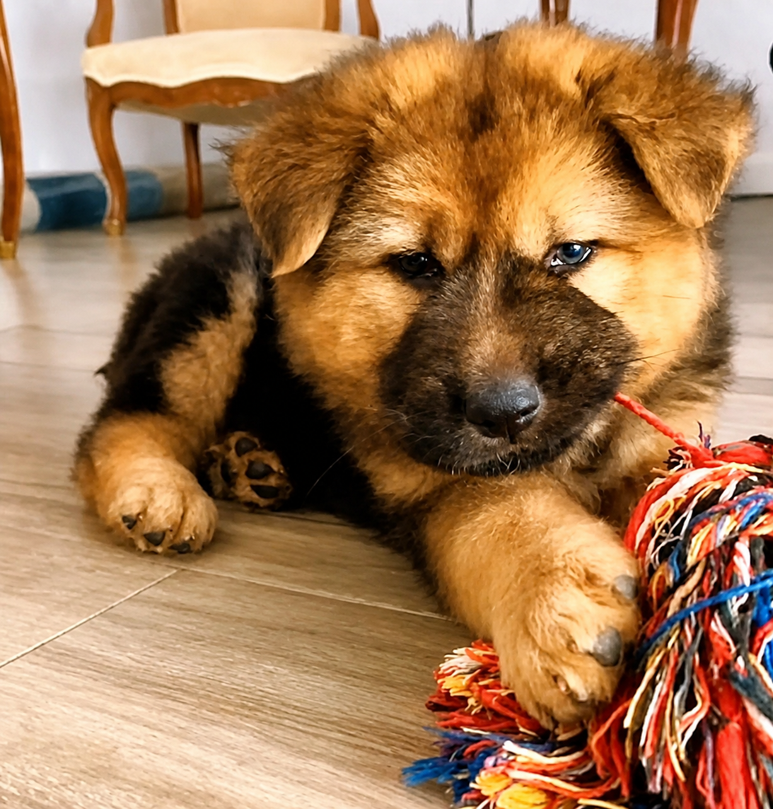
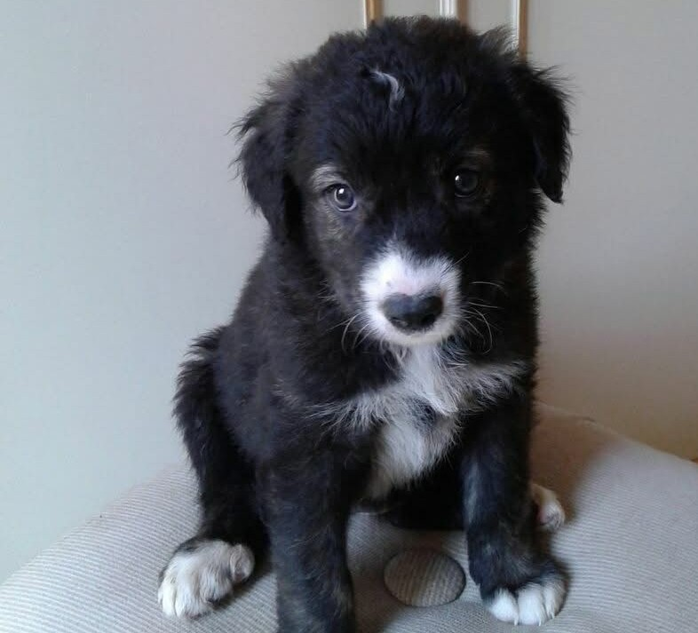
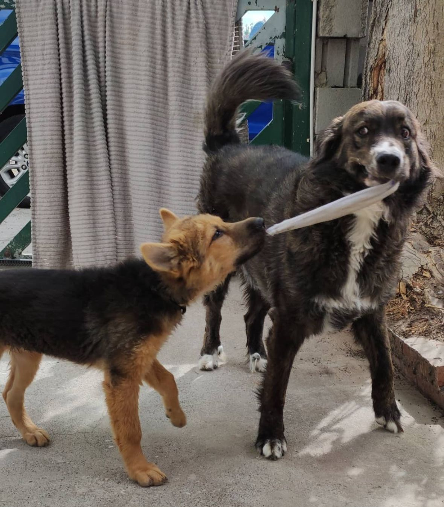

Cambia una vita, adotta un amico per sempre.
Adottare non significa solo accogliere un animale, ma salvare una vita che ha conosciuto l'abbandono.
Pandora e Macchia sono la prova che la felicità ha quattro zampe e un cuore immenso.
Ogni cane in canile aspetta solo l'occasione di diventare il tuo migliore amico!
Ecco a voi le mie splendide cagnoline la prima volta che le ho viste online, il momento esatto in cui mi sono innamorata di loro e ho deciso di chiamare l'associazione che se ne occupava!

Pandora
MacchiaSe c’è una cosa che ho imparato adottando Pandora e Macchia, è che in due la vita è più bella. Si fanno compagnia, giocano insieme e si danno forza a vicenda. Adottarne due non è un impegno doppio, ma un amore che si moltiplica: vederle crescere insieme è stata la scelta migliore che potessi fare.

"Perché nessuno dovrebbe mai sentirsi solo."
Il percorso per portare a casa le mie cagnoline è stato possibile grazie a persone straordinarie. Questa associazione lavora instancabilmente per garantire un futuro migliore ad ogni amico pelosetto, facendo da ponte tra chi ha bisogno di aiuto e chi può offrire una nuova vita.